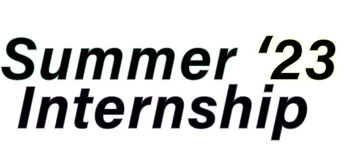
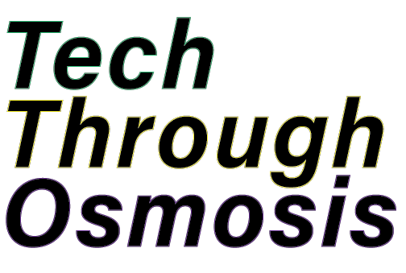

Professional Dork, Programmer of Fun Things, Amateur Podcaster,
Always Learning,
Go Blue! Go Blue! Go Blue! Go Blue! Go Blue! Go Blue! Go Blue! Go Blue!
Go Blue! Go Blue
Fitness Coach, Tumor Slayer, HIIT Aficionado, Never Finished,
Half-Marathon Runner,
Check out what I'm up to!

I am getting my hands dirty as a Full Stack Development Intern at the ZEUS NSF Lab. My team is building out
the web application which will streamline the
process of external users requesting time on the laser, and allow users to view experimental outcomes.
Check out the site here: ZEUS Lab
TTO is a podcast where Matt Berk, fellow Umich student, and I meet up weekly to discuss the latest in technology and entrepreneurship.
This podcast is geared towards fellow young professionals looking to learn and keep up with the
tech industry in an informal, fun way. Episodes are posted on Spotify on a weekly basis.

Personally, I am partaking in a 6 week fitness challenge I have created for myself. I am working out
6 days a week, twice a day (two one-hour sessions, one cardio/HIIT, one strength training) with the
goal of acheiving sub 10% body fat by the end of the challenge.
I am currently coaching 6 clients, focusing on various goals such as weight loss, muscle gain, and
functional fitness. I am not currently accepting new clients, but if you are interested in working with me
please reach out to me via email.
I am excited to begin the Fall '23 Semester at Michigan. I will be taking Linear Algebra, Web Systems,
Theory of Computation, and a German Language course. Outside of the classroom I am excited to continue
my involvement with my extracurricualr activities. I am excited to be holding a Python and SQL workshop
in October for members of the Michigan Sport Consulting Group.
I am very excited to begin my work with the SPARK Electric Racing Team this semester, as I will be helping to
design the embedded software to allow for regenerative breaking.